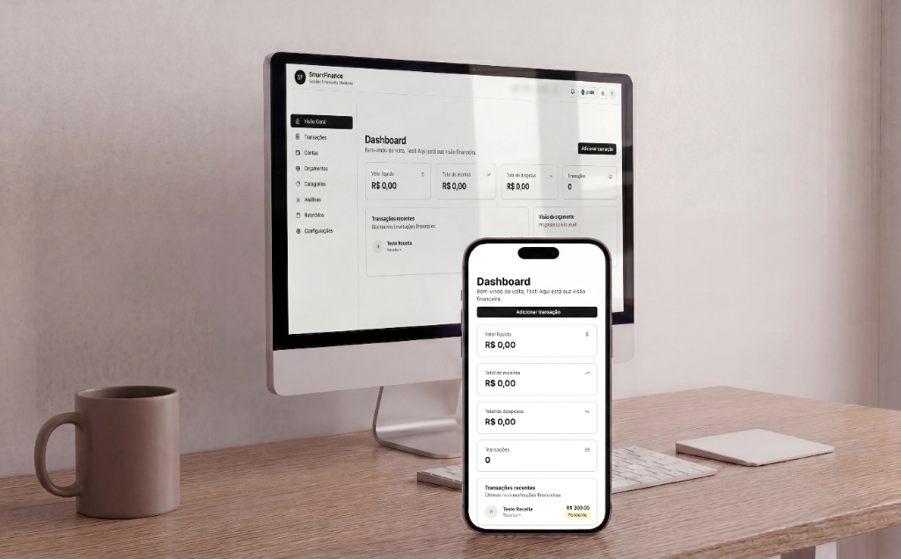

- Arquitetura
- Modular monolith em camadas
- Mensageria
- RabbitMQ + Outbox Pattern
- Testes
- 81 testes .NET + 95 do microserviço
- Infra
- Terraform · ECS Fargate · RDS
Visão geral
Plataforma fullstack de gestão financeira pessoal, com autenticação segura, controle de contas, transações, categorias, orçamentos e analytics. O domínio central é o de gestão financeira, com frontend Next.js e backend .NET 8.
O sistema centraliza a vida financeira do usuário em uma aplicação única, com segregação de dados por usuário, visão consolidada de saldo, controle de receitas e despesas, acompanhamento de orçamento e relatórios analíticos. Além do backend principal em .NET, o repositório mantém um microserviço complementar em Node.js/TypeScript voltado a pagamentos.
Arquitetura
Backend principal em .NET 8 organizado como monólito modular em camadas, frontend desacoplado em Next.js 14 e um microserviço complementar em Node.js para pagamentos. A comunicação assíncrona interna acontece via Outbox + RabbitMQ.
-
SmartFinance.DomainEntidades, enums e contratos de repositório e unidade de trabalho. -
SmartFinance.ApplicationCommands, queries, DTOs e interfaces de aplicação. -
SmartFinance.InfrastructureEF Core, DbContext, migrations, repositórios genéricos e serviços. -
SmartFinance.WebApiControllers, middlewares, autenticação, mensageria, SignalR e bootstrap.
Fluxo de criação de uma transação
- O usuário autentica em
/api/v1/auth/login; o backend valida a senha com PBKDF2, gera access token JWT e refresh token e devolve a sessão em cookies HttpOnly. - O frontend passa a enviar o token CSRF nas operações mutáveis e consulta contas, categorias, transações, orçamentos e analytics.
- Ao criar uma transação, o handler valida a conta do usuário, grava a transação, atualiza o saldo e persiste uma mensagem na outbox — tudo na mesma transação de banco.
- O
OutboxPublisherServicelê a outbox e publica o evento no RabbitMQ. - O
TransactionCreatedConsumerServiceconsome o evento, verifica idempotência emProcessedIntegrationEventse dispara notificação em tempo real via SignalR. - O dashboard do usuário reflete a atualização sem precisar recarregar a página.
Pontos fortes
- Uso real de RabbitMQ com Outbox Pattern, retry, dead-letter queue e idempotência no consumo.
- Autenticação bem acima da média: JWT, rotação de refresh token, cookies HttpOnly, CSRF e rate limiting.
- Observabilidade com Serilog, Prometheus, OpenTelemetry, Grafana e CloudWatch.
- Atualização em tempo real via SignalR.
- Infraestrutura em Terraform: ECS Fargate, RDS, ALB, WAF, Secrets Manager, CloudTrail e IAM via OIDC do GitHub.
Limites e decisões conscientes
O que este projeto não faz, e por quê. Descrever isso com precisão vale mais do que exagerar o escopo.
- O domínio ainda é predominantemente anêmico: a maior parte das regras vive em handlers e services, não em agregados ricos com value objects e domain events.
- A arquitetura é consistente em alto nível, mas não uniforme: Auth e Transactions usam MediatR com commands/queries, enquanto Accounts, Categories, Budgets e Analytics seguem por interfaces de serviço.
- O fluxo orientado a eventos está concentrado no evento de criação de transação — ainda não é uma malha ampla de eventos entre múltiplos contextos.
- O microserviço de pagamentos funciona como contexto complementar, e não como parte plenamente integrada ao produto principal.